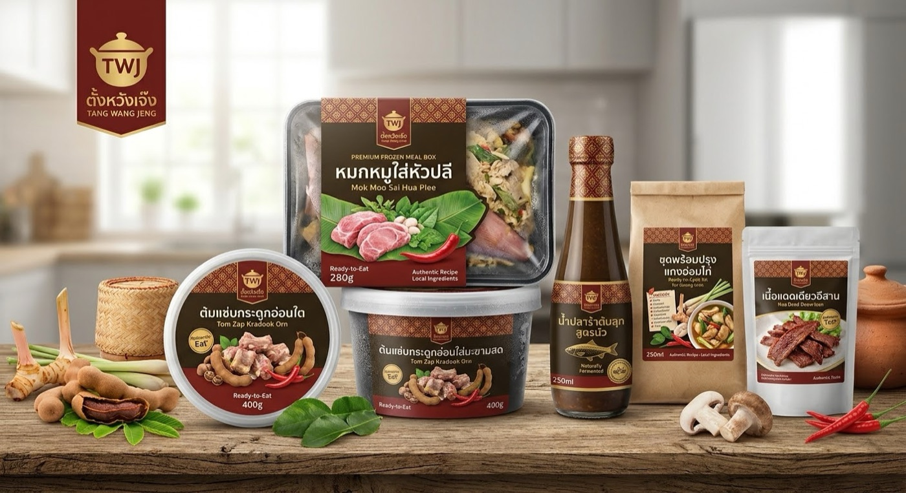

ตั้งหวังเจ๊งจำกัดมหาชน
🛍️Products & Services
We sell delicious frozen food from Isan (Northeast Thailand). We use real local ingredients and traditional recipes. Our freezing technology keeps the food fresh, healthy, and tasty.
Ready-to-Eat (Just Heat and Eat):
Steamed Pork with Banana Blossom: Tasty pork wrapped in banana leaf, ready to warm up.
Spicy and Sour Pork Rib Soup: A spicy, rich soup with fresh tamarind.
Ready-to-Cook & Seasoning:
Boiled Fish Sauce (Nam Pla Ra): Made from local fish with no chemical preservatives.
📜History & Milestones
Inspiration: We wanted to bring Isan food to the world and help local farmers sell their fresh crops.
Our Journey:
Year 1: Collected original recipes, teamed up with local farmers, and built our factory.
Year 2: Launched our first 5 dishes in supermarkets and online.
Year 3: Made new sauces and started selling to Thai communities in other countries.
🎯Goals
Short-Term Goals (1–2 Years):
Become the most popular brand for high-quality frozen Isan food in Thailand.
Sell our food in major Thai supermarkets and delivery apps.
Long-Term Goals (3–5 Years):
Become the #1 Thai Isan food brand exported worldwide (USA, Europe, Australia, and Asia).
Help over 500 farmer families earn a good, stable income.
Reduce food waste in our factory to zero.
👥Customers & Markets
In Thailand:
People from Isan living in big cities: People who miss home-cooked food but do not have time to cook.
Young people and families: People who want quick, clean, and delicious spicy meals.
Health-conscious eaters: People who want natural food without preservatives.
Overseas:
Thai and Asian people abroad: People looking for original Thai tastes in other countries.
Foreigners who love Thai food: Anyone who wants to try authentic Isan flavor.
✨What Makes Us Different?
•100% Local Ingredients
We buy herbs, fish, and vegetables directly from local Isan farmers to support their income.
•Real Isan Taste
We keep the original spicy and savory taste without using artificial additives.
•Advanced Freezing
Our quick-freeze process keeps the food as fresh and soft as freshly cooked meals.